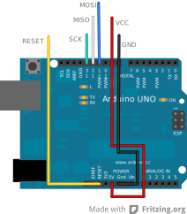
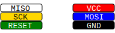

Programmer
| Troubleshooting ← | ↑ ScratchMonkey | → Tested Configurations |
Programmer
Target
ISP
An Arduino can be used to reprogram another Arduino.
Since the Arduino's XTAL1 pin is connected to an oscillator, the only usable protocol is ISP. In desperate circumstances, it might be possible to remove the MCU from its socket (if your board has the socketed through-hole variant of the MCU) and program it on a breadboard.
ISP

An Arduino Micro can be reprogrammed through its pins (for the Leonardo, the same signals are connected, but you'll have to use the ICSP header). Since the Micro's XTAL1 pin is connected to an oscillator, the only usable protocol is ISP.
HVSP

The Digispark is a tiny, ATtiny85 based board featuring bitbang style USB connectivity.
Since the Digispark has the RESET pin disabled to obtain another I/O pin, it cannot be programmed through ISP. It needs to be programmed either through Digistump's variant of the Arduino IDE, or through HVSP.
ISP
Most Arduino boards feature one or several 6 pin ICSP headers, which can be used to program the Arduino through ISP. Be careful to:
| Troubleshooting ← | ↑ ScratchMonkey | → Tested Configurations |